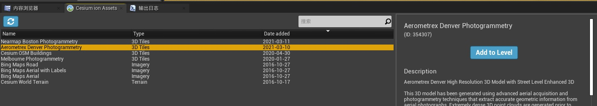
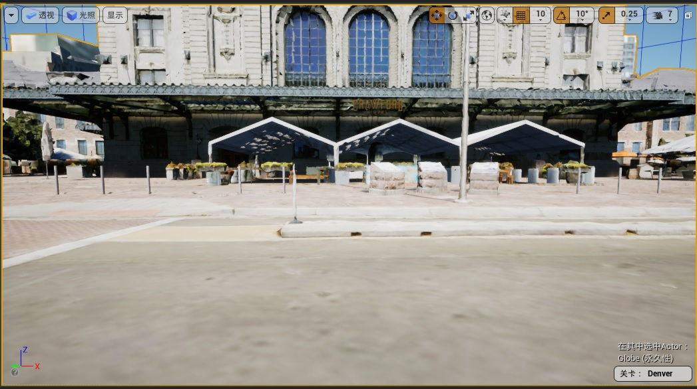

目标
此步骤将学习如何设置控制器，而不是使用 Cesium 的 DynamicPawn。
第一步：添加摄影测量数据

为了防止地形和摄影测量数据交叉，将 Aerometrex Denver Photogrammetry 的 actor 的位置的 Z 值设置为 600。

第二步：定位到摄影测量数据
- 方式一：如果有经纬度坐标和高程数据，直接设置 CesiumGeoreference 的数据
Origin Latitude = 39.752827
Origin Longitude = -104.999689
Origin Height = 1570.879421
- 方式二：在【世界大纲视图】中双击 Aerometrex Denver Photogrammetry，使用场景视图导航到想要放置世界原点的位置，并点击【Place Georeference origin Here】按钮
第三步：导入第三人称角色
可以添加 UE 自带的【Third Person】资源，也可以添加自己做的角色。添加自带的小白人资源有两种方式：
- 方式一：通过【添加/导入】中的【添加功能或内容包】

- 方式二：从其他有【第三人称游戏模板】的项目中，将 ThirdPersonCharacter 迁移到本项目中。

第四步：将 ThirdPersonCharacter 放入到场景中
找到 ThirdPersonCharacter 并将其拖拽到场景里，并调整合适的朝向

效果如下：

设置【自动控制玩家】为【玩家0】，这样在点击【运行】的时候就可以看到小白人了

注意：如果你现在试着玩这个关卡，你会注意到你的演员可能会在丹佛摄影测量完全加载之前开始下降。继续阅读，看看如何解决这个问题。出于这个原因，还建议禁用当前未与之交互的任何物理对象的物理功能。
第五步：设置一个安全的起始位置
在小白人的脚下放置一个立方体，防止开始游戏时，由于 3DTiles 数据在加载过程中，小白人由于受重力影响而掉下去。

第六步：在场景中添加一个车辆控制器

第七步：设置关卡蓝图
通过 C 和 V 切换小白人和车辆控制器的控制权。
为了防止当控制权切换到小白人后，车辆控制器受物理特性影响，要关闭物理模拟